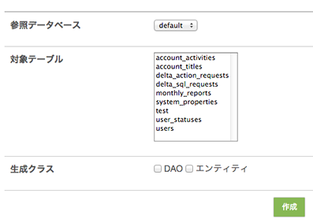

戻る
最終更新日: 2013 年 6 月 24 日
データベースへの接続
一般的な Web アプリケーションであれば、データベースと連携してデータを参照したり更新することが多いはずです。delta にはデータアクセスを手助けするための PDO ラッパーコンポーネントが提供されています。まず手始めに、データベースの接続情報を設定ファイルに定義するところから始めましょう。
- YAML Code# config/application.yml
database:
default:
dsn: 'mysql:host=localhost; dbname=delta'
user: foo
password: bar
'database' 以下の属性がデータベースの設定情報となります。'default' はあらかじめ用意されたデータソース ID となり、複数のデータソースが定義できる仕組みとなっています。 もしあなたが構築するシステムがレプリケーションを必要とする場合、次のように複数のデータソースを定義するべきでしょう。
- YAML Code# config/application.yml
database:
default:
dsn: 'mysql:host=localhost; dbname=delta'
user: foo
password: bar
slave:
dsn: 'mysql:host=slave; dbname=delta'
user: foo
password: bar
設定ファイルに定義可能な属性は次の通りです。
| 属性構成 | デフォルト値 | 必須 | 説明 | |||
|---|---|---|---|---|---|---|
| database | {データソース ID} (+) | ◯ | データソース ID。 | |||
| dsn | ◯ | DSN 情報。詳しくは PDO::__construct() を参照。 | ||||
| user | ◯ | ユーザ名。 | ||||
| password | ◯ | パスワード。 | ||||
| options | 接続オプション。指定可能な値は PDO::__construct() の $driver_options を参照 | |||||
| PDO::ATTR_PERSISTENT | TRUE | 永続接続モード。 | ||||
表内の (+) は、対象属性が複数回指定可能なことを表します。
それでは早速プログラムからデータベースに接続してみましょう。
- PHP Code#
// Delta_DIController::getConnection() (アクションやフィルタからコール可能)
$database = $this->getDatabase();
// コネクションを取得 ('default' データソースに接続)
$conn = $database->getConnection();
// 'slave' データソースに接続
$conn = $database->getConnection('slave');
データベースに接続するには getConnection() メソッドを利用します。getConnection() はデフォルトで 'default' に定義されたデータソースを参照しますが、引数に ID を指定することで任意のデータベースに接続することも可能です。
また、あまり利用する機会は多くないかもしれませんが、データソースをプログラム上で構築することもできます。
- PHP Code#
$config = array();
$config['dsn'] = 'mysql:host=localhost; dbname=delta';
$config['user'] = 'foo';
$config['password'] = 'bar';
$database = $this->getDatabase();
$conn = $database->getConnectionWithConfig($config);
データベースコンポーネントの実体は Delta_DatabaseManager であり、config/base_diocn.yml により DI ベースで管理されています。
クエリの発行
データベースに接続することはできたので、次にクエリを発行してみましょう。
- PHP Code#
$conn = $this->getDatabase()->getConnection();
$resultSet = $conn->rawQuery('SELECT user_id FROM users');
// 一行ずつレコードを参照
while ($record = $resultSet->read()) {
// レコードオブジェクトから user_id を取得
// 100
$userId = $record->user_id;
// レコードオブジェクトを配列に変換
// array('user_id' => 100)
$array = $record->toArray();
}
// 全てのレコードを取得
$array = $resultSet->readAll();
Delta_DatabaseConnection::rawQuery() メソッドは参照型のクエリを発行し、レコードセットの集合体となる Delta_DatabaseRessultSet オブジェクトを返します。read() はその名の通り 1 件のレコードを読み込み、レコードデータを Delta_RecordObject として返します。SELECT で取得したフィールドデータは Delta_RecordObject の public プロパティにセットされるため、$record->{field_name} の形式で参照することができます。
Delta_DatabaseResultSet クラスにはレコードを取得するための様々なメソッドが用意されており、例えば readAllByHash() を使えばキーと値から構成される連想配列データを取得することができます。これは例えば HTML の <select> 要素を作る際に役立つでしょう。
- PHP Code#
$conn = $this->getDatabase()->getConnection();
$resultSet = $conn->rawQuery('SELECT user_id, username FROM users');
// user_id をキー名、usernaem を値とする連想配列を返す
// array(array(1 => 'foo', 2 => 'bar', 3 => 'baz'))
$array = $resultSet->readAllByHash();
ここではシンプルなクエリを紹介しましたが、条件文を伴うより現実的なクエリを発行する場合は、次に紹介するプリペアードステートメントを利用するべきです。
rawQuery() メソッドに指定する条件文の値は必要に応じてプログラマがエスケープ処理を施す必要があります。エスケープメソッドとして Delta_DatabaseConnection::quote() が提供されていますが、rawQuery() との組み合わせは非推奨です。このメソッドはシンプルなクエリの発行のみに利用するべきです。
クエリの発行 (プリペアードステートメント)
安全なクエリの発行方法として、データベースコンポーネントはプリペアードステートメントをサポートしています。次のコードを見てみましょう。
- PHP Code#
$conn = $this->getDatabase()->getConnection();
$query = 'SELECT user_id FROM users WHERE user_id = :user_id';
$stmt = $conn->createStatement($query);
$stmt->bindParam(':user_id', 100);
$resultSet = $stmt->executeQuery();
Delta_DatabaseConnection::createStatement() は引数に渡したクエリからステートメントオブジェクト Dleta_DatabaseStatement を生成します。ここではクエリの条件として 'user_id = :user_id' を指定しました。値のバインドは bindParam() (または bindValue()) で行うことができます。今回は 100 を指定したので、実際に発行されるクエリは 'SELECT user_id FROM uses WHERE user_id = 100' といった形式になります。executeQuery() の戻り値は rawQuery() と同じ Delta_DatabaseResultSet オブジェクトのため、後のレコード操作は先ほどと同じ形式になるでしょう。
更新系クエリの発行も基本的には同じです。
- PHP Code#
$conn = $this->getDatabase()->getConnection();
$query = 'INSERT INTO users(username, birth_date, blood_type, register_date) values(:username, :birth_date, :blood_type, NOW())';
$stmt = $conn->createStatement($query);
$stmt->bindParam(':username', 'foo');
$stmt->bindParam(':birth_date', '1980-08-06');
$stmt->bindParam(':blood_type', 'A');
$affectedRows = $stmt->execute();
execute() は作用したレコード件数を返すメソッドです。
プリペアードステートメントは名前付きバインド変数のほか、'?' を用いた疑問符形式もサポートしています。詳しくは API を参照して下さい。
データアクセスオブジェクト
データベースコンポーネントはデータアクセスの手段として、DAO パターンを採用した DAO オブジェクトを提供しています。DAO パターンに関する説明はここでは省略しますが、コントロールパネルを用いて DAO クラスを自動的に生成したり、SQL を書かずしてデータを取得する便利な機能が提供されています。
DAO を使うには初めに DAO クラスを定義するところから始めます。先ほど説明した通り、クラスは自動生成することができます。delta のコントロールパネルを開き、DAO ジェネレータを起動して下さい。アプリケーション設定ファイルに正しくデータベースの記述があれば、テーブル一覧が表示されるはずです。
「対象テーブル」から DAO を生成するテーブルを選択し、「生成クラス」では DAO とエンティティにチェックを付けて「作成」をクリックしましょう。次の画面では作成されたクラスが {APP_ROOT_DIR}/tmp に生成されます。クラスをアプリケーションが読み込めるようにするには「ファイルをデプロイする」を実行して下さい。これで DAO クラスは {APP_ROOT_DIR}/libs/dao、エンティティは {APP_ROOT_DIR}/libs/entity に配置されます。
例えば users テーブルから自動生成される DAO とエンティティクラスの中身は次のようなコードになります。
- PHP Code# libs/dao/UsersDAO.php
class UsersDAO extends Delta_DAO
{
protected $_tableName = 'users';
protected $_primaryKeys = array('user_id');
}
- PHP Code# libs/entity/UsersEntity.php
class UsersEntity extends Delta_DatabaseEntity
{
public $userId;
public $username;
public $birthDate;
public $bloodType;
public $registerDate;
}
DAO クラスにはあらかじめ $_tableName、$_primaryKeys という変数が定義されます。アプリケーション開発者は、users テーブルを操作するメソッドをこのクラスに実装する形となります。また、エンティティには users テーブルが持つフィールドが定義されます。このクラスはテーブルのレコードを表します。フィールドが定数を持つ場合、このクラスに定数を宣言すると良いでしょう。エンティティの使い方は後ほど紹介します。
次に DAO クラスを用いた一般的なデータアクセスの実装例を紹介します。
- PHP Code# libs/dao/UsersDAO.php
class UsersDAO extends Delta_DAO
{
protected $_tableName = 'users';
protected $_primaryKeys = array('user_id');
/**
* 引数に指定した $userId に一致するユーザデータを取得
*/
public function findByUserId($userId)
{
// Delta_DAO::getConnection() でコネクションを取得
$conn = $this->getConnection();
$query = 'SELECT * FROM users WHERE user_id = :userId';
$stmt = $conn->createStatement($query);
$stmt->bindParam(':userId', $userId);
$rs = $stmt->executeQuery();
return $rs->read();
}
}
ここでは findByUserId() メソッドを定義しました。このクラスをアクションから利用するコードは次の通りです
- PHP Code# libs/dao/UsersDAO.php
$usersDAO = Delta_DAOFactory::create('Users');
$record = $usersDAO->findByUsersId($userId);
// '1980/08/06'
$birthDate = $record->birth_date;
DAO のインスタンスは Delta_DAOFactory::create() から取得することができますので、後は実行したいメソッドを指定すれば処理を実行することができます。ここでは findByUserId() が Delta_RecordObject を返していますが、必要であれば Delta_RecordObject::toEntity() メソッドでエンティティオブジェクトに変換することもできます。
複数のテーブルを結合してレコードを取得する場合、メソッドはどの DAO クラスに定義するべきか? という問題があります。このようなケースでは、「DAO クラスを介してどのような結果を取得したいのか?」というメソッドの目的に合わせて考えると分かりやすいでしょう。例えば users テーブルに紐づく user_activities というテーブルがあったとします。user_activities はその名の通り、ユーザの行動ログを蓄積するテーブルです。もし「特定ユーザの行動ログを全て取得したい」という目的であれば、UserActivitiesDAO クラスにメソッドを定義するべきです。
DAO クラスを用いたデータの更新
DAO クラスを使うことで、レコードの登録や更新、削除を行うこともできます。初めにレコードの登録を見てみましょう。
- PHP Code#
$usersDAO = Delta_DAOFactory::create('Users');
$entity = $usersDAO->createEntity();
$entity->username = 'foo';
$entity->birthDate = '1980/08/06';
$entity->bloodType = UsersEntity::BLOOD_TYPE_A; // 1
$entity->registerDate = new Delta_DatabaseExpression('NOW()');
$usersDAO->insert($entity);
Delta_DAO::createEntity() で UsersEntity オブジェクトを生成した後、エンティティが持つプロパティに値をセットします。$entity->birthDate で UsersEntity::BLOOD_TYPE_A を指定しましたが、これは 'A 型' というタイプをエンティティに定数として宣言しました (フィールドに格納される値が固定値の場合は定数を用いた方が間違いが減り、読みやすいコードとなります)。また $entity->registerDate には 'new Delta_DatabaseExpression('NOW()')' という宣言がありますが、これはデータベース関数をフィールドにセットしています。
ひと通りエンティティにデータをセットした後、Delta_DAO::insert() メソッドにエンティティを渡すことでレコードの登録は完了します。これで決まりきったクエリコードを書く必要がなくなりました。
上のコードでは直接エンティティに値をセットしましたが、配列を介してデータを渡すことも可能です。どちらも生成されるクエリは同じものとなります。
- PHP Code#
$array = array(
'username => 'foo',
'birthDate' => '1980/08/06',
'bloodType' => UsersEntity::BLOOD_TYPE_A,
'registerDate' => new Delta_DatabaseExpression('NOW()')
)
$usersDAO = Delta_DAOFactory::create('Users');
$entity = $usersDAO->createEntity($array);
$usersDAO->insert($entity);
次にレコードの更新方法を見てみましょう。
- PHP Code#
$usersDAO = Delta_DAOFactory::create('Users');
$entity = $usersDAO->createEntity();
$entity->userId = 100;
$entity->bloodType = UsersEntity::BLOOD_TYPE_B;
// "UPDATE users SET blood_type = 'B' WHERE user_id = 100"
$usersDAO->update($entity);
レコードの更新対象にはプライマリキーが参照されます (実際には DAO クラスが自動生成された際に定義される $_primaryKeys 変数が参照される)。プライマリキーを使ったデータ更新であれば、update() メソッドを使うことでクエリを書く手間が省けるでしょう。
エンティティに複数の条件をセットした場合は AND 条件としてクエリが発行されます。
delete() メソッドはプライマリキーを用いたレコードの削除機能を提供します。
- PHP Code#
// "DELETE FROM users WHERE user_id = 100"
$usersDAO->delete(100);
// プライマリキーが複数のキーで構成される場合は配列形式で指定
// 'DELETE FROM users WHERE xxx = ... AND yyy = ...'
$usersDAO->delete(array(..., ...));
クライテリア
DAO クラスにはテーブル単位のデータ処理メソッドを実装でき、あらかじめ提供されている update() や delete() メソッドを使うことで、シンプルなクエリであれば SQL を書く必要がないことまでは分かりました。では、参照クエリを書かずしてデータを取得するにはどうすれば良いか? という問題が残っています。
参照クエリはレコードの更新や削除と比べると複雑になりがちです。delta は高度な ORM を備えていませんが、代わりにクライテリアという機能を提供しています。クライテリアは、データ取得の条件をあらかじめ「スコープ」として DAO の scopes() メソッドに定義しておき、アプリケーション開発者が「スコープ」を組み合わせることでクエリを書くことなくデータを取得する仕組みです。
文章で説明するよりコードを眺めた方が早いと思うので、いくつかのサンプルを紹介します。
- PHP Code#
$usersDAO = Delta_DAOFactory::create('Users');
// クライテリアオブジェクトを生成
$criteira = $usersDAO->createCriteira();
// 'SELECT * FROM users'
$records = $criteria->findAll();
// 'SELECT COUNT(*) FROM users'
$count = $criteria->count();
Delta_DAO::createCriteira() でクライテリアオブジェクトを生成後、Delta_DatabaseCriteria::findAll() メソッドで users テーブルから全てのレコードを取得します。$records には Delta_RecordObject で構成される配列データが返されます。DAO にメソッドを定義することなく、簡単にデータを取得することができました。count() メソッドを利用することで全件数を取得することもできます。
もし 1 件だけレコードを取得したいのであれば、find() メソッドを使って下さい。find() メソッドはレコードが存在する場合に Delta_RecordObject のインスタンスを返します。
- PHP Code#
$usersDAO = Delta_DAOFactory::create('Users');
$criteira = $usersDAO->createCriteira();
// 'SELECT * FROM users LIMIT 1 OFFSET 0'
$record = $criteria->find();
プライマリキーに一致した値を取得したい場合は setPrimaryKeyValue() を使います。
- PHP Code#
$usersDAO = Delta_DAOFactory::create('Users');
$criteira = $usersDAO->createCriteira();
$criteria->setPrimaryKeyValue(100);
// 'SELECT * FROM users WHERE user_id = 100'
$record = $criteria->find();
クライテリアはメソッドチェーン形式で指定することもできます。
- PHP Code#
// レコードが存在するかどうかをチェック
$exists = Delta_DAOFactory::create('Users')
->createCriteria()
->setPrimaryKeyValue(100)
->exists();
スコープを用いたデータ参照
特定のフィールド値を条件としてデータを取得したい場合、DAO クラスに条件を「スコープ」として登録する必要があります。
- PHP Code#
class UsersDAO extends Delta_DAO
{
// Delta_DAO::scopes()
public function scopes(Delta_DatabaseCriteriaScopes $scopes)
{
$scopes->add(
'bloodType',
array(
'where' => 'blood_type = 1'
)
);
}
}
まず初めに Delta_DAO::scopes() メソッドをオーバーライドし、Delta_DatabaseCriteriaScopes オブジェクトにデータ取得条件をスコープとして追加します。ここでは 'bloodType' という条件名で、 array('where' => 'blood_type = 100') を定義しました。早速このスコープを呼び出してみましょう。
- PHP Code#
// 'SELECT * FROM users WHERE blood_type = 1'
$records = Delta_DAOFactory::create('Users')
->createCriteria()
->add('bloodType')
->findAll();
クライテリアに条件を追加するには Delta_DatabaseCriteria::add() メソッドを使います。これで find() メソッドを呼び出せば、blood_type = 1 に一致する全てのデータが返されるという仕組みです。
先ほどスコープでは array('where' => 'blood_type = 1') を宣言しましたが、キーには条件として 'where' のほかに 'select'、'limit'、'group' 等を指定することができます。値はキーが持つ値となり、ネイティブな SQL コードを書くことができます。
キーに指定可能な値は Delta_DatabaseCriteriaScopes::add() メソッドを参照して下さい。
それでは先ほどのスコープ宣言に'limit' 条件を追加してみましょう。
- PHP Code#
class UsersDAO extends Delta_DAO
{
public function scopes(Delta_DatabaseCriteriaScopes $scopes)
{
$scopes->add(
'bloodType',
array(
'where' => 'blood_type = 1'
)
)->add(
'limit',
array(
'limit' => 'LIMIT 10',
'offset' => 'OFFSET 0'
)
);
}
}
'limit' スコープは「先頭行から 10 件取得する」という条件に指定しました。
- PHP Code#
// 'SELECT * FROM users WHERE blood_type = 1 LIMIT 10 OFFSET 0'
$record = Delta_DAOFactory::create('Users')
->createCriteria()
->add'bloodType')
->add('limit')
->findAll();
クライテリアは add() メソッドでスコープを追加できるため、findAll() を実行した際に 'LIMIT 10 OFFSET 0' という条件が追加されました。
現在のコードは blood_type が 1 と固定化されているため、今度はこの値が可変値を許可するよう 変更してみましょう。
- PHP Code#
class UsersDAO extends Delta_DAO
{
public function scopes(Delta_DatabaseCriteriaScopes $scopes)
{
$scopes->add(
'bloodType',
function($bloodType) {
return array(
'where' => "blood_type = $bloodType"
);
}
)->add(
'limit',
array(
'limit' => 'LIMIT 10',
'offset' => 'OFFSET 0'
)
);
}
}
'bloodType' スコープの第 2 引数が配列ではなくディスクロージャに変更されました。ディスクロージャはパラメータを持ち、抽出条件にそのパラメータをセットしていることが分かります。
クライテリアを生成する際にパラメータを指定するには、Delta_DatabaseCriteriaScopes::add() の第 2 引数に配列型で条件を指定する必要があります。
- PHP Code#
// 'SELECT * FROM users WHERE blood_type = 1 LIMIT 10 OFFSET 0'
$record = Delta_DAOFactory::create('Users')
->createCriteria()
->add('bloodType', array(UsersEntity::BLOOD_TYPE_A))
->add('limit')
->findAll();
この変更によって、アクション側で任意のパラメータを指定することが可能となります。
- ディスクロージャに渡されるパラメータはあらかじめ SQL エスケープされた値となります
- クライテリアによって生成されたクエリを確認するには Delta_DatabaseCriteria::getQuery() メソッドを利用すると良いでしょう
クライテリアはあくまで簡単な (決まりきった) クエリを書かずに済むための仕組みであり、決して SQL を覚えなくて良いという訳ではありません。ORM は時として非効率なクエリを発行する場合があり、原因調査やチューニングに時間を費やす場合があります。delta フレームワークでは ORM をアンチパターンと考えており、ビジネスロジック上の複雑なクエリはデータベース構造を熟知したプログラマがコーディングするべきであると考えます。